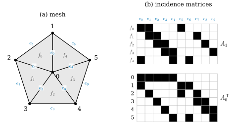
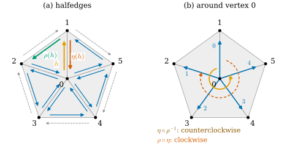

33.5 Mesh Data Structures
Goals
- face list에서 incidence matrix \(A_0, A_1\)과 signed incidence matrix \(A_0^{\pm}, A_1^{\pm}\)을 만들고, star와 closure를 행렬 곱으로 계산할 수 있다.
- signed incidence matrix의 열로 consistent orientation을 판정하고, orientation을 바꿀 때 행렬이 어떻게 바뀌는지 말할 수 있다.
- halfedge mesh를 두 permutation(twin, next)으로 정의하고, 그것이 닫힌 oriented simplicial surface와 그 \(\chi\)를 정확히 담는다는 것을 증명할 수 있다.
- face list에서 halfedge 구조를 만들고 vertex 둘레를 차례로 도는 코드를 쓸 수 있다.
Prerequisites
- Definition 33.2.4, Definition 33.2.6, Definition 33.2.10: star, simplicial closure, link
- Definition 33.3.6: relative orientation, Corollary 33.3.8, Example 33.3.12: face list의 orientation 규약
- Corollary 33.4.5: simplicial surface의 edge와 fan 조건
Motivation
Section 33.4에서 surface의 조건을 vertex마다의 link 검사로 정리했다. 이제 이 조합적 정보를 컴퓨터에 저장하고 쓰는 방법이 문제다. Section 33.2의 집합 algorithm은 정의를 그대로 옮겼지만, vertex 하나의 star를 찾을 때마다 complex 전체를 훑는다. vertex가 수십만 개인 mesh에서 모든 vertex의 이웃을 차례로 보려면 이것으로는 부족하다.
mesh 자료구조가 답해야 할 질문은 몇 가지로 정해져 있다. 이 face의 vertex는? 이 vertex에 붙은 face를 차례로? 이 edge의 양쪽 face는? boundary loop는? 이 절은 세 가지 답을 본다. 가장 간단한 face list, 선형대수로 계산하는 incidence matrix, 그리고 surface의 구조를 그대로 담아 이웃을 상수 시간에 찾는 halfedge mesh다. incidence matrix의 부호 판은 Chapter 36에서 discrete exterior derivative가 된다.

dgdec.edge_list의 사전식 순서다(\(e_0 = 01, \dots, e_4 = 05\)가 spoke, \(e_5 = 12, \dots, e_9 = 45\)가 테두리). 읽는 법: (a)의 검은 수는 vertex, 파란 \(e\)는 edge, 회색 \(f\)는 triangle의 번호다. (b)는 위에 \(A_1\)(triangle × edge), 아래에 \(A_0^{\mathsf T}\)(vertex × edge)을 같은 edge 열에 맞춰 그렸다. 검은 칸이 1이다. 볼 것: \(A_1\)의 행마다 검은 칸이 셋(triangle의 세 edge), \(A_0^{\mathsf T}\)의 열마다 둘(edge의 두 끝점)이다. \(A_1\)의 열을 세로로 보면 spoke \(e_0\)–\(e_4\)는 검은 칸이 둘(안쪽 edge), 테두리 \(e_5\)–\(e_9\)는 하나(boundary edge)다. \(A_0^{\mathsf T}\)의 행 0은 검은 칸이 다섯이고, 이것이 vertex 0의 valence다. 본문과의 연결: Definition 33.5.1, Proposition 33.5.4. 같은 mesh를 halfedge로 저장한 것은 Figure 33.5.2다.Figure 33.5.1의 (b)를 세로로 읽어 보자. edge \(e_0 = \{0, 1\}\)의 열에서 위쪽 \(A_1\)에는 \(f_0\)과 \(f_4\)에 검은 칸이 있고, 아래쪽 \(A_0^{\mathsf T}\)에는 vertex 0과 1에 있다. 곧 한 열이 “이 edge의 양쪽 triangle과 양 끝 vertex”를 모두 알려 준다. 가로로 읽으면 \(A_1\)의 행은 triangle의 세 edge, \(A_0^{\mathsf T}\)의 행은 vertex에 붙은 edge다. 이웃을 찾는 질문이 행렬의 행과 열을 읽는 일로 바뀌는 것이 incidence matrix의 요점이다.
Face Lists
mesh 파일과 대부분의 코드는 triangle의 vertex 번호를 행으로 늘어놓은 배열 \(F \in \Z^{n_2 \times 3}\)을 쓴다. Crane과 강의 슬라이드는 이것을 adjacency list라 부른다 [CMU-DDG L2B]. 이 배열은 top simplex만 저장하고, 나머지 simplex는 Example 33.1.20처럼 필요할 때 생성한다. 정수 \(3n_2\)개로 저장이 작고, 행의 순서가 triangle의 orientation을 함께 담는다(Example 33.3.12). 대신 “vertex \(i\)를 포함하는 face”를 찾으려면 \(F\) 전체를 훑어야 한다. 비용은 \(n_2\)에 비례한다.
Incidence Matrices
이웃 관계를 행렬로 쓰면 선형대수의 도구를 쓸 수 있다. 먼저 simplex에 번호를 붙인다. vertex는 \(0, \dots, n_0 - 1\), triangle은 \(F\)의 행 번호, edge는 \(\{i, j\}\) (\(i \lt j\))의 사전식 순서(dgdec.edge_list, Notation)다.
Definition 33.5.1 (incidence matrix). pure 2-complex \(\mathcal{K}\)의 incidence matrix(접속 행렬)는 두 행렬 \(A_0 \in \{0, 1\}^{n_1 \times n_0}\), \(A_1 \in \{0, 1\}^{n_2 \times n_1}\)
이다. 행은 한 단계 높은 simplex, 열은 그 face가 될 수 있는 simplex다.
Example 33.5.2 (the tetrahedron).
lib/ch33.py의 tetrahedron은 face list가 \(F = (0,1,2), (0,3,1), (0,2,3), (1,3,2)\)이다. edge는 \(01, 02, 03, 12, 13, 23\)의 순서다. 그러면
이다. 예를 들어 \(A_1\)의 둘째 행은 triangle \((0, 3, 1)\)의 edge \(01, 03, 13\)에 1을 둔다. 부호 없는 행렬은 triangle의 vertex 순서와 무관하므로, 같은 tetrahedron에 같은 사전식 번호를 쓴 [Cr §2.4]의 예와 같은 행렬이다.
Verification: verify/v-33-5-mesh-data-structures.py
Proposition 33.5.3 (vertex adjacency from incidence). \(A_0^{\mathsf T}A_0 = D + W\)이다. 여기서 \(D = \diag(\deg 0, \dots, \deg(n_0 - 1))\)는 valence의 대각행렬이고, \(W\)는 vertex adjacency matrix(\(\{u, v\}\)가 edge이면 \(W_{uv} = 1\), 아니면 0)다.
Proof. \((A_0^{\mathsf T}A_0)_{uv} = \sum_e (A_0)_{eu}(A_0)_{ev}\)는 \(u\)와 \(v\)를 모두 포함하는 edge의 수다. \(u = v\)이면 \(u\)를 포함하는 edge의 수, 곧 \(\deg u\)이다. \(u \ne v\)이면 그런 edge는 \(\{u, v\}\) 하나뿐이므로 \(\{u, v\} \in \mathcal{K}\)일 때 1, 아니면 0이다.
Proposition 33.5.4 (what the incidence matrices know). pure 2-complex에서 (a) \(A_0\)의 모든 행의 합은 2, \(A_1\)의 모든 행의 합은 3이다. (b) \(A_0\)의 열 \(v\)의 합은 \(\deg v\)이고, \(A_1\)의 열 \(e\)의 합은 \(e\)를 포함하는 triangle의 수다. 따라서 edge 조건 (E)(Corollary 33.4.5)는 \(A_1\)의 열의 합이 모두 1 또는 2라는 것이고, boundary edge는 합이 1인 열이다. (c) \((A_1A_0)_{fv}\)는 \(v \in f\)이면 2, 아니면 0이다.
Proof. (a) edge는 vertex가 둘, triangle은 edge가 셋이다. (b) 정의를 열로 읽은 것이다. (c) \((A_1A_0)_{fv} = \sum_e (A_1)_{fe}(A_0)_{ev}\)는 \(f\)의 edge 가운데 \(v\)를 포함하는 것의 수다. \(v \in f\)이면 \(f\)의 세 edge 중 \(v\)를 포함하는 것은 정확히 둘이고, \(v \notin f\)이면 없다.
(c)의 2가 \(0\)이 되게 하는 것이 아래의 부호다.
Sparse storage
incidence matrix는 거의 모든 성분이 0이다. icosphere(3)의 \(A_0\)는 \(1920 \times 642 = 1{,}232{,}640\)개의 성분 가운데 \(2n_1 = 3840\)개(약 0.3%)만 1이다. 그래서 0이 아닌 성분만 저장하는 sparse matrix를 쓴다. 가장 단순한 것은 COO(coordinate) 형식으로, 0이 아닌 성분마다 (행, 열, 값)의 세 수를 저장한다. 행렬과 벡터의 곱을 빠르게 하려면 CSR(compressed sparse row) 형식을 쓴다. 성분을 행 순서로 정렬해 열 번호와 값의 배열에 넣고, 행 \(r\)의 성분이 그 배열의 어디서 시작하는지를 길이가 (행의 수) \(+ 1\)인 배열 indptr에 적는다. 행 \(r\)의 성분은 위치 indptr[r]부터 indptr[r+1] - 1까지다. 곱 \(Ax\)는 0이 아닌 성분 수에 비례하는 시간이 걸린다. 이 장의 코드는 scipy 없이 numpy로 쓴다(Exercise 33.5.6).
Star and closure by matrix products
simplex의 집합 \(S\)를 세 indicator vector \(s_0 \in \{0,1\}^{n_0}\), \(s_1 \in \{0,1\}^{n_1}\), \(s_2 \in \{0,1\}^{n_2}\)로 쓰자(\(S\)에 속하는 simplex 자리가 1). 아래에서 벡터의 “\(\gt 0\)”은 성분마다 판정해 0/1 벡터를 만드는 것이고, \(\lor\)는 성분마다의 “또는”이다.
Proposition 33.5.5 (star and closure as matrix products). face list가 생성하는 pure 2-complex에서
이다. 여기서 \(\operatorname{St}(S)_k\)는 \(\operatorname{St}(S)\)의 \(k\)-simplex의 indicator vector다. \(\operatorname{Lk}(S)\)는 이 둘을 (33.2.2)대로 조합해 얻는다.
Proof. \((A_0s_0)_e\)는 \(e\)의 vertex 가운데 \(S\)에 속하는 것의 수이므로, \(\gt 0\)은 \(e\)가 \(S\)의 vertex를 포함한다는 뜻이다. 따라서 \(t_1\)은 \(S\)의 simplex를 face로 갖는 edge, 곧 \(\operatorname{St}(S)\)의 edge다. triangle \(f\)가 \(\operatorname{St}(S)\)에 속할 조건은 \(f \in S\)이거나 \(f\)가 \(S\)의 edge나 vertex를 포함하는 것이다. \(f\)가 \(S\)의 vertex \(v\)를 포함하면 \(v\)를 포함하는 \(f\)의 edge가 \(t_1\)에 속하므로, 이 조건은 “\(f \in S\)이거나 \(f\)의 edge 중 \(t_1\)에 속하는 것이 있다”와 같고, 이것이 \(s_2 \lor (A_1t_1 \gt 0)\)이다. vertex는 자기 자신만 face로 가지므로 \(\operatorname{St}(S)\)의 vertex는 \(S\)의 vertex뿐이다. closure는 Proposition 33.2.7대로 face를 모으는 것이다. \((A_1^{\mathsf T}s_2)_e \gt 0\)은 \(e\)가 \(S\)의 어떤 triangle의 edge라는 뜻이고, triangle의 vertex는 그 edge들의 vertex이므로 vertex는 \(c_1\)의 edge의 vertex와 \(S\)의 vertex를 모으면 된다.
집합 algorithm(Section 33.2)과 비교하면, 같은 일을 sparse 행렬 곱 몇 번으로 한다. 행렬은 한 번 만들어 두고, 많은 \(S\)에 대해 반복해 쓸 수 있다. Crane의 coding 과제도 star, closure, link를 이 행렬로 구현하게 한다 [Cr §2.7].
Signed Incidence Matrices
oriented complex(Definition 33.3.11)에서는 incidence에 relative orientation의 부호를 붙일 수 있다. orientation은 Notation의 규약, 곧 edge \(\{i,j\}\) (\(i \lt j\))는 \([i, j]\), triangle은 \(F\)의 행의 순서, vertex는 \(+\)를 쓴다(Example 33.3.12).
Definition 33.5.6 (signed incidence matrix). oriented pure 2-complex의 signed incidence matrix(부호 접속 행렬)는
이다. \(o\)는 Definition 33.3.6(a)의 relative orientation이다. Notation의 규약에서는 edge \([i, j]\)의 행이 \(i\) 자리에 \(-1\), \(j\) 자리에 \(+1\)이고(Proposition 33.3.7), triangle의 행은 그 triangle이 edge를 \(i \to j\)로 지나면 \(+1\), \(j \to i\)로 지나면 \(-1\)이다(Corollary 33.3.8).
Example 33.5.7 (the tetrahedron, signed). Example 33.5.2의 tetrahedron에서
\[ A_0^{\pm} = \begin{pmatrix} -1&1&0&0\\ -1&0&1&0\\ -1&0&0&1\\ 0&-1&1&0\\ 0&-1&0&1\\ 0&0&-1&1 \end{pmatrix}, \] \[ A_1^{\pm} = \begin{pmatrix} 1&-1&0&1&0&0\\ -1&0&1&0&-1&0\\ 0&1&-1&0&0&1\\ 0&0&0&-1&1&-1 \end{pmatrix} \]이다. 둘째 행 \((0, 3, 1)\)은 edge를 \(0 \to 3\)(\(+\), 열 03), \(3 \to 1\)(\(-\), 열 13), \(1 \to 0\)(\(-\), 열 01)으로 지난다. 곱을 계산하면 \(A_1^{\pm}A_0^{\pm} = 0\)이다. 부호 없는 \(A_1A_0\)의 성분 2(Proposition 33.5.4(c))가 부호 때문에 \(+1 - 1\)로 상쇄된다. 이 사실의 일반적인 증명은 Chapter 36의 일이다(아래 Looking ahead). 또 \(A_1^{\pm}\)의 열의 합은 모두 0이다.
Verification: verify/v-33-5-mesh-data-structures.py(icosphere, torus, grid에서도 \(A_1^{\pm}A_0^{\pm} = 0\)을 수치로 확인한다)
Proposition 33.5.8 (changing orientations). edge의 orientation을 바꾸는 것을 대각성분이 \(\pm1\)인 대각행렬 \(P_1\)(뒤집은 edge 자리가 \(-1\))로, triangle의 orientation을 바꾸는 것을 \(P_2\)로 나타내면, 새 signed incidence matrix는 \(P_1A_0^{\pm}\)와 \(P_2A_1^{\pm}P_1\)이다. 따라서 곱 \(A_1^{\pm}A_0^{\pm}\)는 \(P_2A_1^{\pm}A_0^{\pm}\)로 바뀌고, 특히 0인지 아닌지는 orientation의 선택에 무관하다.
Proof. Definition 33.3.6 뒤의 관찰에서 \(o(-\sigma, \tau) = -o(\sigma, \tau)\)이고 \(o(\sigma, -\tau) = -o(\sigma, \tau)\)이다. edge \(e\)를 뒤집으면 \(A_0^{\pm}\)의 행 \(e\)와 \(A_1^{\pm}\)의 열 \(e\)에 \(-1\)이 곱해지고, triangle \(f\)를 뒤집으면 \(A_1^{\pm}\)의 행 \(f\)에 \(-1\)이 곱해진다. 행에 곱하는 것은 왼쪽에서, 열에 곱하는 것은 오른쪽에서 대각행렬을 곱하는 것이다. \(P_1^2 = I\)이므로 \((P_2A_1^{\pm}P_1)(P_1A_0^{\pm}) = P_2A_1^{\pm}A_0^{\pm}\)이다.
Proposition 33.5.9 (consistency read off the columns). edge마다 triangle이 둘 이하인 pure 2-complex에서, 행의 orientation이 consistent(Definition 33.3.13)일 필요충분조건은 0이 아닌 성분이 둘인 \(A_1^{\pm}\)의 모든 열에서 두 성분의 부호가 반대인 것, 곧 그 열의 합이 0인 것이다. 특히 consistently oriented이고 boundary가 없는 simplicial surface에서는 \(\mathbf{1}^{\mathsf T}A_1^{\pm} = 0\)이다.
Proof. edge \(e = [i, j]\)에 triangle \(f, g\)가 붙어 있으면 열 \(e\)의 성분은 \(o(f, e)\)와 \(o(g, e)\)이고, (33.3.2)에 의해 \(o(f, g) = -o(f, e)o(g, e)\)이다. 따라서 \(o(f, g) = +1\)일 필요충분조건은 두 성분의 부호가 반대인 것이다. boundary가 없으면 모든 열이 이런 열이므로(Corollary 33.4.5) 모든 열의 합이 0이다.
The Halfedge Mesh
incidence matrix는 어떤 complex에도 쓰이지만, surface의 특별한 구조를 쓰지 않는다. 특히 “vertex 둘레의 face를 차례로”라는 질문에는 순서가 필요하다. oriented simplicial surface에는 이 순서가 있다. edge마다 양쪽에 face가 하나씩 있고(Corollary 33.4.5), vertex 둘레의 face들은 한 바퀴를 이루며, orientation이 그 바퀴의 방향을 정한다. halfedge mesh는 이 구조를 permutation 두 개로 저장한다. 각 edge \(\{i,j\}\)를 방향이 반대인 두 halfedge \(i \to j\), \(j \to i\)로 쪼개고, 각 halfedge가 자기 face 안에서 다음에 오는 halfedge와 반대쪽 짝을 기억한다.
Definition 33.5.10 (halfedge mesh). 원소의 수가 짝수인 유한집합 \(H\)(이 \(H\)는 mean curvature와 무관하다. 아래 Conventions 상자)와 \(H\)의 두 permutation \(\eta\)(twin), \(\rho\)(next)의 쌍을 halfedge mesh(하프에지 mesh)라 한다. 단 \(\eta\)는 fixed point가 없는 involution이다: 모든 \(h\)에서 \(\eta(\eta(h)) = h\), \(\eta(h) \ne h\). \(H\)의 원소를 halfedge라 하고,
- face는 \(\rho\)의 orbit(cycle),
- edge는 \(\eta\)의 orbit(halfedge 두 개의 쌍),
- vertex는 \(\rho\circ\eta\)의 orbit
로 정의한다. 각각의 수를 \(n_2^H\), \(n_1^H = \abs{H}/2\), \(n_0^H\)로 쓰고 \(\chi^H = n_0^H - n_1^H + n_2^H\)라 한다.
vertex의 정의를 이해하려면 halfedge \(h = (i \to j)\)를 “\(i\)에서 나가는 화살표”로 보면 된다. \(\eta(h) = (j \to i)\)이고, 그 face에서 다음 halfedge \(\rho(\eta(h))\)는 \(i\)에서 나간다. 그러니 \(\rho\circ\eta\)는 \(i\)에서 나가는 halfedge를 \(i\)에서 나가는 다른 halfedge로 보낸다. 같은 vertex에서 나가는 halfedge들이 한 orbit을 이룬다.

dgdec.HalfedgeMesh로 저장한 것. 안쪽 halfedge 15개와 테두리의 boundary halfedge 5개가 있다. 읽는 법: (a)의 파란 화살표는 안쪽 halfedge를 그 triangle 쪽으로 밀어 그린 것이고, triangle마다 세 화살표가 \(\rho\)(next)의 cycle을 이룬다. 회색 점선은 boundary halfedge다. 주황 \(h = 0 \to 1\), 주홍 \(\eta(h) = 1 \to 0\), 초록 \(\rho(h) = 1 \to 2\)가 강조되어 있다. (b)의 파란 화살표는 vertex 0에서 나가는 halfedge이고, 번호는 \(h\)에서 시작해 \(\eta\circ\rho^{-1}\)(twin∘prev)을 되풀이한 순서다. 주황 원호가 \(\eta\circ\rho^{-1}\)의 방향, 주홍 점선 원호가 \(\rho\circ\eta\)(next∘twin)의 방향이다. 볼 것: (a)에서 \(h\)와 \(\eta(h)\)는 같은 edge의 양쪽에서 반대로 달린다. 이것이 consistent orientation이다. (b)에서 \(\eta\circ\rho^{-1}\)은 vertex 1, 2, 3, 4, 5의 순서(반시계 방향)로, \(\rho\circ\eta\)는 1, 5, 4, 3, 2의 순서(시계 방향)로 돈다. 두 orbit은 같은 다섯 halfedge다. 본문과의 연결: Definition 33.5.10, Proposition 33.5.11, Conventions 상자.Figure 33.5.2의 (a)에서 주황 \(h = 0 \to 1\)부터 따라가 보자. \(h\)는 \(f_0\)에 속하고, 그 다음 halfedge \(\rho(h)\)는 \(f_0\)의 다음 변 \(1 \to 2\)(초록)다. \(h\)의 twin \(\eta(h)\)(주홍)는 같은 edge를 반대로 달리는 \(f_4\)의 halfedge다. 이제 \(\eta(h) = 1 \to 0\)에서 \(f_4\) 안의 다음 halfedge로 가면 \(0 \to 5\)가 나온다. 이것이 \(\rho(\eta(h))\)이고, (b)에서 \(h\) 다음에 시계 방향으로 오는 화살표다. 반대 방향으로 가려면 \(h\)의 이전 halfedge \(\rho^{-1}(h) = 2 \to 0\)으로 갔다가 twin을 취해 \(0 \to 2\)로 간다. (b)의 번호 0, 1, 2, …가 이 반시계 순서다.
Proposition 33.5.11 (the two vertex rotations). \(\eta\circ\rho^{-1} = (\rho\circ\eta)^{-1}\)이다. 따라서 둘의 orbit은 같은 집합들이다.
Proof. \((\rho\circ\eta)^{-1} = \eta^{-1}\circ\rho^{-1} = \eta\circ\rho^{-1}\)이다(\(\eta\)는 involution이므로 \(\eta^{-1} = \eta\)). permutation과 그 역은 같은 cycle을 반대 방향으로 돈다.
Example 33.5.12 (the halfedge mesh of an oriented surface). consistently oriented이고 boundary가 없는 simplicial surface의 face list \(F\)에서 halfedge mesh를 만든다. \(H\)는 행 \((i, j, k)\)마다의 세 방향 edge \(i \to j\), \(j \to k\), \(k \to i\)의 모임이다. \(\rho(i \to j) = j \to k\)는 같은 행의 다음 방향 edge, \(\eta(i \to j) = j \to i\)다. Example 33.5.2의 tetrahedron은 halfedge가 12개다. \(\rho\)의 orbit은 길이 3의 4개(triangle), \(\eta\)의 orbit은 6개(edge), \(\rho\circ\eta\)의 orbit은 길이 3의 4개(vertex마다 valence 3)이고 \(\chi^H = 4 - 6 + 4 = 2\)다.
Verification: verify/v-33-5-mesh-data-structures.py
이 구성이 정말 halfedge mesh가 되고 원래 surface를 정확히 담는다는 것이 이 절의 중심 명제다. 증명의 각 단계가 halfedge 코드가 기대는 불변식(invariant)이다.
Proposition 33.5.13 (halfedge invariants). \(F\)가 consistently oriented이고 boundary가 없는 simplicial surface의 face list이고 \((H, \eta, \rho)\)가 Example 33.5.12의 구성이라 하자. halfedge \(h = i \to j\)의 tail을 \(i\), head를 \(j\), face를 그것이 속한 행이라 하면
- (a) 모든 방향 edge \(i \to j \in H\)는 정확히 한 행에 속한다. 따라서 \(\rho\)와 face가 잘 정의된다.
- (b) \(\eta\)는 잘 정의된 fixed point 없는 involution이고, \(\operatorname{tail}(\eta h) = \operatorname{head}(h)\)이다.
- (c) \(\rho\)는 permutation이고 \(\rho^3 = \id\), \(\operatorname{tail}(\rho h) = \operatorname{head}(h)\), \(\operatorname{face}(\rho h) = \operatorname{face}(h)\)이며, \(\rho\)의 orbit은 triangle과 일대일로 대응한다.
- (d) \(\eta\)의 orbit은 edge와 일대일로 대응한다.
- (e) \(\rho\circ\eta\)의 orbit은 vertex와 일대일로 대응한다. vertex \(i\)의 orbit은 \(i\)에서 나가는 halfedge \(\deg i\)개 전체이고, 그 순서는 \(\operatorname{Lk}(i)\)의 cycle을 한 방향으로 도는 순서다.
따라서 \(n_k^H = n_k\) (\(k = 0, 1, 2\))이고 \(\chi^H = \chi\)이다.
Proof idea: consistency가 “방향 edge 하나에 행 하나”를, edge마다 triangle 둘이 “twin의 존재”를, link가 cycle이라는 것이 “vertex 둘레의 orbit이 하나”를 보장한다.
Proof. (a) \(\{i, j\}\)는 triangle 정확히 둘에 속하고(Corollary 33.4.5), consistent이므로 둘은 이 edge를 서로 반대 방향으로 지난다(Corollary 33.3.8). 따라서 \(i \to j\)를 지나는 행은 정확히 하나다. 한 행 안에서 같은 방향 edge가 두 번 나오지 않는 것은 세 vertex가 서로 다르기 때문이다.
(b) \(i \to j \in H\)이면 (a)의 다른 triangle이 \(j \to i\)로 지나므로 \(j \to i \in H\)이다. \(\eta\eta = \id\)이고 \(i \ne j\)이므로 fixed point가 없다. tail에 대한 식은 정의 그대로다.
(c) 각 행의 세 방향 edge를 \(\rho\)는 cycle \(i \to j \mapsto j \to k \mapsto k \to i \mapsto i \to j\)로 보낸다. (a)에 의해 \(H\)는 행마다의 이 세 원소로 겹침 없이 나뉘므로 \(\rho\)는 permutation이고 orbit이 행, 곧 triangle이다. 나머지 식은 같은 행 안에서 이어지는 방향 edge라는 것에서 나온다.
(d) \(\{i, j\} \in \mathcal{K}\)이면 (b)에 의해 \(i \to j\)와 \(j \to i\)가 모두 \(H\)에 있고, 둘이 하나의 \(\eta\)-orbit이다. 거꾸로 orbit은 언제나 이런 쌍이다.
(e) \(h = i \to j\)이고 \(j \to i\)가 행 \((j, i, l)\)(cyclic 순서)에 있다고 하자. 그러면 \(\rho(\eta(h)) = i \to l\)이다. \(\{i, j, l\}\)은 \(i\)를 포함하는 triangle이므로 \(\{j, l\}\)은 \(\operatorname{Lk}(i)\)의 edge이고, 이 단계는 link에서 \(j\)의 이웃 \(l\)로 가는 한 걸음이다. 사용한 triangle은 \(j \to i\)를 지나는 것, 곧 \(h\)가 속한 triangle이 아닌 쪽이다. 다음 단계는 \(i \to l\)에서 출발하는데, \(i \to l\)은 행 \((j, i, l)\)에 속하므로 다음에 쓰는 triangle은 \(\{i, j, l\}\)이 아닌 쪽이고, 그래서 link에서 \(j\)로 되돌아가지 않고 \(l\)의 다른 이웃으로 간다. \(\operatorname{Lk}(i)\)가 cycle이므로(Definition 33.4.2) 이 걸음은 link의 모든 vertex를 한 번씩 지나 처음으로 돌아온다. 각 link vertex \(j\)에 대해 \(i \to j \in H\)이므로(\(\{i, j\}\)의 두 triangle 중 하나가 \(i \to j\)로 지난다) orbit은 \(i\)에서 나가는 halfedge \(\deg i\)개 전체다. 그러므로 vertex마다 orbit이 정확히 하나다. (c), (d), (e)에서 개수가 같고 \(\chi^H = \chi\)이다.
거꾸로, 아무 halfedge mesh나 surface를 하나 정한다. 다음 명제의 증명은 topology를 쓰므로 스케치로 둔다.
Proposition 33.5.14 (every halfedge mesh is a closed oriented surface). halfedge mesh \((H, \eta, \rho)\)에서 \(\rho\)의 orbit마다 그 길이만큼 변을 가진 polygon을 하나씩 두고(변 하나가 halfedge 하나), \(\eta\)로 짝지은 두 변을 서로 반대 방향으로 붙이면 boundary가 없는 oriented surface가 나온다. 그 Euler characteristic은 \(\chi^H\)이다.
Proof sketch. 각 polygon은 disk이고, 변을 둘씩 붙이므로 변 위의 점 근처는 반쪽 disk 두 장을 붙인 disk다. polygon의 꼭짓점은 붙인 뒤 \(\rho\circ\eta\)의 orbit마다 하나의 점이 되고, 그 점에 모이는 polygon의 모퉁이들이 orbit의 순서대로 한 바퀴를 이루므로 그 근처도 disk다. 모든 polygon을 \(\rho\)의 방향으로 돌게 orient하면 붙인 변에서 방향이 반대라서 orientation이 맞는다. 이 cell 분할의 vertex, edge, face의 수가 \(n_0^H, n_1^H, n_2^H\)이므로 그것으로 센 Euler characteristic은 \(\chi^H\)이다. polygon을 붙인 공간이 surface라는 것의 엄밀한 증명은 cell complex의 topology에 속한다 [Hatcher02].
Example 33.5.15 (two halfedges). \(H = \{h_0, h_1\}\), \(\eta = (h_0\ h_1)\)이라 하자. (a) \(\rho = \id\)이면 face는 \(\{h_0\}\), \(\{h_1\}\)의 둘(변이 하나인 polygon, 곧 원판 둘), edge는 하나, \(\rho\circ\eta = \eta\)의 orbit은 \(\{h_0, h_1\}\) 하나라서 vertex가 하나다. \(\chi^H = 1 - 1 + 2 = 2\)이다. 원판 두 장의 테두리를 한 점을 맞춰 붙인 sphere다. (b) \(\rho = \eta\)이면 face는 하나(변이 둘인 polygon), \(\rho\circ\eta = \id\)라서 vertex가 둘이고 \(\chi^H = 2 - 1 + 1 = 2\)이다. 변이 둘인 polygon의 두 변을 지퍼처럼 붙인 sphere다. 둘 다 simplicial complex로는 쓸 수 없다. triangle이 아닌 face가 있고, (a)는 edge의 두 끝이 같은 vertex다. halfedge가 둘이면 \(\rho\)는 이 두 가지뿐이고, 강의 슬라이드도 이 둘을 가장 작은 예로 든다 [CMU-DDG L2B].
Verification: verify/v-33-5-mesh-data-structures.py
Non-example 33.5.16.
(a) triangle 셋이 한 edge를 공유하는 책은 halfedge mesh로 쓸 수 없다. 그 edge의 방향 edge가 셋 생겨야 하는데 \(\eta\)의 orbit은 언제나 둘이다. (b) Möbius band의 face list에서는 이음매의 두 triangle이 같은 방향 edge \(n \to 0\)을 지나므로(Proposition 33.3.17) 그 halfedge가 두 face에 속해야 한다. Möbius band에는 consistent orientation이 없으므로 어떤 행을 뒤집어도 어딘가에 이런 충돌이 남는다. halfedge mesh는 정의상 oriented surface만 담는다. dgdec.HalfedgeMesh는 두 경우 모두 ValueError를 낸다.
Verification: verify/v-33-5-mesh-data-structures.py
Boundary
boundary가 있는 surface에서는 boundary edge의 한쪽에 face가 없어 \(\eta\)를 정할 수 없다. 흔한 해법은 구멍마다 polygon 하나를 채운 것처럼 다루는 것이다 [Cr §2.5]. boundary edge마다 반대 방향의 boundary halfedge를 하나 더하고 그 face를 “없음”으로 표시한 뒤, boundary halfedge의 \(\rho\)는 boundary를 따라 다음 boundary halfedge로 둔다. 그러면 \(\rho\)의 orbit은 진짜 face와 boundary loop(Proposition 33.4.8)로 나뉘고, \(\chi\)를 셀 때는 진짜 face만 센다. dgdec.HalfedgeMesh가 이 방식이다. 예를 들어 vertex가 \(4 \times 4\)인 grid_mesh는 halfedge가 \(3 \cdot 18 + 12 = 66\)개이고, boundary halfedge 12개가 loop 하나를 이루며, \(\chi = 16 - 33 + 18 = 1\)이다.
halfedge와 가까운 자료구조로 Guibas와 Stolfi의 quad-edge가 있다 [Guibas85]. edge마다 primal의 두 방향과 함께, 그 edge를 가로지르는 dual edge의 두 방향을 저장하고, 이 넷을 90°씩 돌리는 연산으로 primal mesh와 dual mesh를 동시에 다룬다. dual mesh가 무엇인지가 다음 절의 주제다.
Summary
- face list는 top simplex만 저장한다. 작고 orientation을 담지만, 이웃을 찾으려면 전체를 훑어야 한다.
- incidence matrix \(A_0, A_1\)은 vertex–edge, edge–triangle의 포함 관계다. \(A_0^{\mathsf T}A_0\)는 valence와 adjacency를, \(A_1\)의 열의 합은 edge의 triangle 수를 주고, star와 closure는 행렬 곱으로 계산된다. 실제로는 sparse로 저장한다.
- signed incidence matrix \(A_0^{\pm}, A_1^{\pm}\)은 relative orientation의 부호를 넣은 것이다. orientation을 바꾸면 행과 열에 \(-1\)이 곱해지고, consistent orientation은 \(A_1^{\pm}\)의 열의 합으로 판정된다. \(A_1^{\pm}A_0^{\pm} = 0\)은 Chapter 36에서 증명한다.
- halfedge mesh는 twin과 next 두 permutation이다. face, edge, vertex는 \(\rho\), \(\eta\), \(\rho\circ\eta\)의 orbit이고, oriented simplicial surface에서 이것들은 원래의 simplex와 정확히 대응한다.
다음 절에서는 primal mesh와 짝을 이루는 dual complex를 정의한다. triangle은 dual vertex가, edge는 dual edge가, vertex는 vertex 둘레의 face를 잇는 dual face가 된다. 그 incidence matrix가 이 절의 \(A_0, A_1\)을 전치한 것이라는 사실이 Poincaré duality의 조합적 얼굴이다.
Exercises
Exercise 33.5.1 ★ 정사각형을 대각선으로 나눈 face list \(F = (0, 1, 2), (0, 2, 3)\)에서 \(A_0\), \(A_1\)을 쓰고(edge 순서는 \(01, 02, 03, 12, 23\)), \(A_0^{\mathsf T}A_0\)를 계산해 Proposition 33.5.3을 확인하여라. 어느 edge가 boundary edge인지 \(A_1\)에서 읽어라.
Solution
\[ A_0 = \begin{pmatrix} 1&1&0&0\\ 1&0&1&0\\ 1&0&0&1\\ 0&1&1&0\\ 0&0&1&1 \end{pmatrix}, \qquad A_1 = \begin{pmatrix} 1&1&0&1&0\\ 0&1&1&0&1 \end{pmatrix}, \] \[ A_0^{\mathsf T}A_0 = \begin{pmatrix} 3&1&1&1\\ 1&2&1&0\\ 1&1&3&1\\ 1&0&1&2 \end{pmatrix}. \]대각성분 \(3, 2, 3, 2\)가 valence이고, 비대각의 1은 edge로 이어진 쌍이다. vertex 1과 3은 이어져 있지 않아 \((A_0^{\mathsf T}A_0)_{13} = 0\)이다. \(A_1\)의 열의 합은 \(1, 2, 1, 1, 1\)이므로 대각선 02만 안쪽 edge이고 나머지 넷이 boundary edge다.
Verification: verify/v-33-5-mesh-data-structures.py
Exercise 33.5.2 ★ 같은 face list에서 \(A_0^{\pm}\), \(A_1^{\pm}\)을 쓰고 \(A_1^{\pm}A_0^{\pm}\)와 \(\mathbf{1}^{\mathsf T}A_1^{\pm}\)를 계산하여라. 두 triangle이 consistent인지 Proposition 33.5.9로 판정하여라.
Solution
\[ A_0^{\pm} = \begin{pmatrix} -1&1&0&0\\ -1&0&1&0\\ -1&0&0&1\\ 0&-1&1&0\\ 0&0&-1&1 \end{pmatrix}, \] \[ A_1^{\pm} = \begin{pmatrix} 1&-1&0&1&0\\ 0&1&-1&0&1 \end{pmatrix}. \]\((0,1,2)\)은 \(0\to1\)(+), \(1\to2\)(+), \(2\to0\)(02 반대, −)이고 \((0,2,3)\)은 \(0\to2\)(+), \(2\to3\)(+), \(3\to0\)(03 반대, −)이다. 곱하면 \(A_1^{\pm}A_0^{\pm} = 0\)이다. 예를 들어 첫 행과 vertex 0의 열: \(1\cdot(-1) + (-1)(-1) + 1\cdot 0 = 0\). \(\mathbf{1}^{\mathsf T}A_1^{\pm} = (1, 0, -1, 1, 1)\)이고, 성분이 둘인 유일한 열 02의 합이 0이므로 consistent다. boundary edge의 열은 \(\pm1\)로 남는다.
Verification: verify/v-33-5-mesh-data-structures.py
Exercise 33.5.3 ★★ pure 2-complex에서 \((A_1A_1^{\mathsf T})_{fg}\)와 \((A_1^{\mathsf T}A_1)_{ee'}\)이 무엇을 세는지 말하고, simplicial surface에서 \(A_1A_1^{\mathsf T} - 3I\)가 “edge를 공유하는 triangle의 쌍”의 adjacency matrix임을 보여라. 이 graph는 Proposition 33.3.18의 search가 걷는 graph다.
Solution
\((A_1A_1^{\mathsf T})_{fg} = \sum_e (A_1)_{fe}(A_1)_{ge}\)는 \(f\)와 \(g\)가 공유하는 edge의 수다. \(f = g\)이면 3이다. \(f \ne g\)이면 두 triangle은 vertex 셋을 공유할 수 없으므로(같은 집합이 되므로) 공유 edge는 0개 또는 1개다. 따라서 \(A_1A_1^{\mathsf T} - 3I\)는 edge를 공유하면 1, 아니면 0인 adjacency matrix다. \((A_1^{\mathsf T}A_1)_{ee'}\)는 \(e\)와 \(e'\)을 모두 포함하는 triangle의 수다. \(e = e'\)이면 \(e\)의 triangle 수(1 또는 2), \(e \ne e'\)이면 두 edge가 한 triangle의 변이면 1, 아니면 0이다. 이 graph의 vertex(triangle)와 edge(공유 edge)가 Section 33.6의 dual vertex와 dual edge다.
Verification: verify/v-33-5-mesh-data-structures.py
Exercise 33.5.4 ★★ [Cr §2.6 변형] \(H = \{0, \dots, 5\}\), \(\eta(h) = h \oplus 1\)(짝 \(0\leftrightarrow1\), \(2\leftrightarrow3\), \(4\leftrightarrow5\)), \(\rho = (0\ 2\ 4)(1\ 5\ 3)\)인 halfedge mesh의 face, edge, vertex를 구하고 \(\chi^H\)를 계산하여라. 어떤 surface인가? 왜 simplicial complex로는 쓸 수 없는가?
Solution
face는 \(\rho\)의 orbit \(\{0, 2, 4\}\), \(\{1, 5, 3\}\)의 둘(변이 셋인 polygon, 곧 triangle 둘), edge는 \(\{0,1\}, \{2,3\}, \{4,5\}\)의 셋이다. \(\rho\circ\eta\)는 \(0 \mapsto \rho(1) = 5 \mapsto \rho(4) = 0\), \(1 \mapsto \rho(0) = 2 \mapsto \rho(3) = 1\), \(3 \mapsto \rho(2) = 4 \mapsto \rho(5) = 3\)이므로 orbit이 \(\{0, 5\}, \{1, 2\}, \{3, 4\}\)의 셋, 곧 vertex 셋이다. \(\chi^H = 3 - 3 + 2 = 2\)이고, Proposition 33.5.14에 의해 sphere다. triangle 두 장의 세 변을 서로 붙인 “베개”다. 두 triangle의 vertex 집합이 같은 세 vertex이므로, 집합의 모임인 simplicial complex에서는 둘을 구별할 수 없다(Non-example 33.1.21(b)). 모든 vertex의 valence가 2이기도 하다(Non-example 33.4.22).
Verification: verify/v-33-5-mesh-data-structures.py
Exercise 33.5.5 ★ Proposition 33.5.13(e)의 증명을 tetrahedron의 vertex 0에 대해 따라가 보아라. halfedge \(0 \to 1\)에서 출발해 \(\rho\circ\eta\)를 되풀이하면 어떤 halfedge들을 지나는가? face list는 Example 33.5.2의 것을 쓴다.
Solution
\(0 \to 1\)은 행 \((0,1,2)\)에 있다. \(\eta(0\to1) = 1 \to 0\)은 행 \((0,3,1)\)의 \(1 \to 0\)이고, 그 다음이 \(0 \to 3\)이다. \(\eta(0\to3) = 3 \to 0\)은 행 \((0,2,3)\)의 \(3 \to 0\)이고, 다음이 \(0 \to 2\)이다. \(\eta(0 \to 2) = 2 \to 0\)은 행 \((0,1,2)\)의 \(2 \to 0\)이고, 다음이 \(0 \to 1\)이다. orbit은 \(0\to1,\ 0\to3,\ 0\to2\)이고, link의 3-cycle \(1, 3, 2\)를 한 방향으로 돈다. normal 쪽에서 보면 시계 방향이다(Conventions 상자).
Verification: verify/v-33-5-mesh-data-structures.py
Exercise 33.5.6 ★
Coding. scipy 없이 numpy로 \(A_0\)를 CSR 형식(indptr, indices)으로 만들고, CSR로 행렬–벡터 곱 \(A_0x\)를 계산하는 함수를 써라. dgmesh.icosphere(3)에서 dense 곱과 결과가 같은지 확인하고, \(A_0^{\mathsf T}\)의 CSR(곧 \(A_0\)를 열 순서로 저장한 것)의 행 길이에서 valence의 분포를 읽어라.
Solution
COO 삼중쌍을 행 순서로 정렬하고, 행마다의 개수를 누적합해 indptr를 만든다.
import numpy as np
import dgmesh as dm
import dgdec as dd
def csr(rows, cols, n_rows): # 0/1 matrix from COO pairs
order = np.lexsort((cols, rows))
indptr = np.concatenate([[0], np.cumsum(np.bincount(rows, minlength=n_rows))])
return indptr, cols[order]
def csr_matvec(indptr, indices, x):
return np.add.reduceat(x[indices], indptr[:-1])
V, F = dm.icosphere(3)
E, _ = dd.edge_list(F)
rows, cols = np.repeat(np.arange(len(E)), 2), E.ravel()
indptr, indices = csr(rows, cols, len(E)) # A0 (n1 x n0)
x = np.random.default_rng(0).normal(size=len(V))
dense = np.abs(dd.d0(F)) @ x
print(len(indices), np.allclose(csr_matvec(indptr, indices, x), dense))
indptrT, _ = csr(cols, rows, len(V)) # A0^T: one row per vertex
valence = np.diff(indptrT)
print({int(d): int((valence == d).sum()) for d in np.unique(valence)})3840 True
{5: 12, 6: 630}0이 아닌 성분은 \(2n_1 = 3840\)개이고, CSR 곱이 dense 곱과 같다. \(A_0^{\mathsf T}\)의 행 \(v\)의 길이가 \(\deg v\)이므로(Proposition 33.5.4(b)) valence 5가 12개, 6이 630개다(Example 33.4.21). np.add.reduceat은 빈 행이 없을 때만 이렇게 쓸 수 있다. edge의 행은 언제나 성분이 둘이므로 여기서는 문제가 없다.
Verification: verify/v-33-5-mesh-data-structures.py(위 코드를 그대로 실행해 출력을 비교한다)